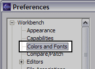
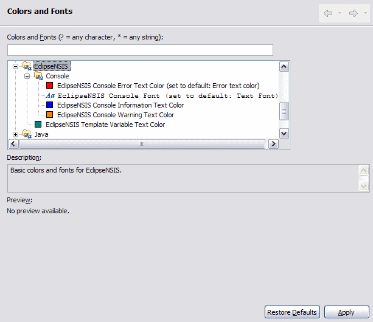

Preferences
Colors and Fonts
The Colors and Fonts preference page is a standard Eclipse Workbench preference page which can be reached by opening the Window→Preferences menu item and then navigating to the Workbench→Colors and Fonts item in the Preferences dialog.

Usage
of this preference page is described in the Workbench User Guide, Colors
and Fonts section.

- Colors and Fonts
- The following EclipseNSIS colors and fonts preferences can be modified on this page.
- Console Error Text Color
- Color used by the EclipseNSIS console to show error messages.
- Console Font
- The text font used by the EclipseNSIS console.
- Console Information Text Color
- Color used by the EclipseNSIS console to show information messages.
- Console Warning Text Color
- Color used by the EclipseNSIS console to show warning messages.
- Template Variable Text Color
- Color used by the EclipseNSIS template preference page previewer and the EclipseNSIS template editor to display template variables.
Previous | Contents | Next
Copyright © 2004-2010 Sunil Kamath (IcemanK).